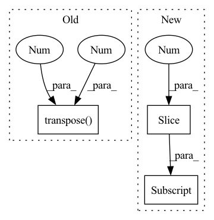

Pattern ID :1905

Before Change
seq_length = seg.size(1)
device = seg.device
emb = self.pe[: seq_length].transpose(0, 1)
return emb.to(device)
After Change
emb = torch.zeros(batch_size, seq_length, self.emb_size)
for i in range(batch_size):
emb[i, :no_pad_num[i], :] = self.emb[2: no_pad_num[i]+2]
return emb.to(device)
In pattern: SUPERPATTERN
Frequency: 3
Non-data size: 3
Instances
Fragment ID: 13347659
Project Name: tencent/tencentpretrain
Commit Name: 2bc6d47065d7a5e6907d449cf5114248000274fe
Time: 2022-12-16
Author: 40569026+JINGZIjingzi@users.noreply.github.com
File Name: tencentpretrain/embeddings/sinusoidalpos_embedding.py
M Class Name: SinusoidalposEmbedding
N Class Name: SinusoidalposEmbedding
M Method Name: forward(3)
N Method Name: forward(3)
M Parent Class: nn.Module
N Parent Class: nn.Module
M File Name: tencentpretrain/embeddings/sinusoidalpos_embedding.py
N File Name: tencentpretrain/embeddings/sinusoidalpos_embedding.py
M Start Line: 45
M End Line: 47
N Start Line: 55
N End Line: 68
'>
Before Change
// b(hc)1q -> bqhc
// print(keys.shape, "keys", values.shape, "values", queries.shape, "queries")
keys = keys.transpose(1, 3)
keys = keys.reshape(keys.shape[:2] + (self.head_count, -1))
// b(hc)1q -> bchq
shape = (batch_count, self.head_count, self.head_dim, -1)
After Change
attention_weights,
values
)
shape = attention_output.shape[:2] + (self.embed_count,)
attention_output = attention_output.reshape(shape)
attention_output = self.out_proj.forward(attention_output)
return attention_output
'>
Fragment ID: 13347657
Project Name: kuprel/min-dalle
Commit Name: c936d261021f0f38d064e146a2167cf3daeeb0db
Time: 2022-06-27
Author: brkuprel@gmail.com
File Name: min_dalle/models/dalle_bart_encoder_torch.py
M Class Name: AttentionTorch
N Class Name: AttentionTorch
M Method Name: forward(5)
N Method Name: forward(5)
M Parent Class: nn.Module
N Parent Class: nn.Module
M File Name: min_dalle/models/dalle_bart_encoder_torch.py
N File Name: min_dalle/models/dalle_bart_encoder_torch.py
M Start Line: 42
M End Line: 82
N Start Line: 43
N End Line: 61
'>
Before Change
mem = self.mem_kv.expand(m, b, e)
keys = default(keys, torch.empty(b, 0, e, device=device))
x, keys = x.transpose(0, 1), keys.transpose(0, 1)
kv = torch.cat((x, mem, keys))
attn_shape = (t, kv.shape[0])
After Change
query_len = default(query_len, qk.shape[1])
t = query_len
q = qk[:, 0:query_len]
qk = F.normalize(qk, 2, dim=-1)
dot = torch.einsum("bie,bje->bij", q, qk)
'>
Fragment ID: 13347651
Project Name: lucidrains/reformer-pytorch
Commit Name: d2462f9b33944e20f5fbeaf19efaa9591378ba65
Time: 2020-01-28
Author: lucidrains@gmail.com
File Name: reformer_pytorch/reformer_pytorch.py
M Class Name: SelfAttention
N Class Name: FullQKAttention
M Method Name: forward(4)
N Method Name: forward(3)
M Parent Class: nn.Module
N Parent Class: nn.Module
M File Name: reformer_pytorch/reformer_pytorch.py
N File Name: reformer_pytorch/reformer_pytorch.py
M Start Line: 386
M End Line: 403
N Start Line: 330
N End Line: 349